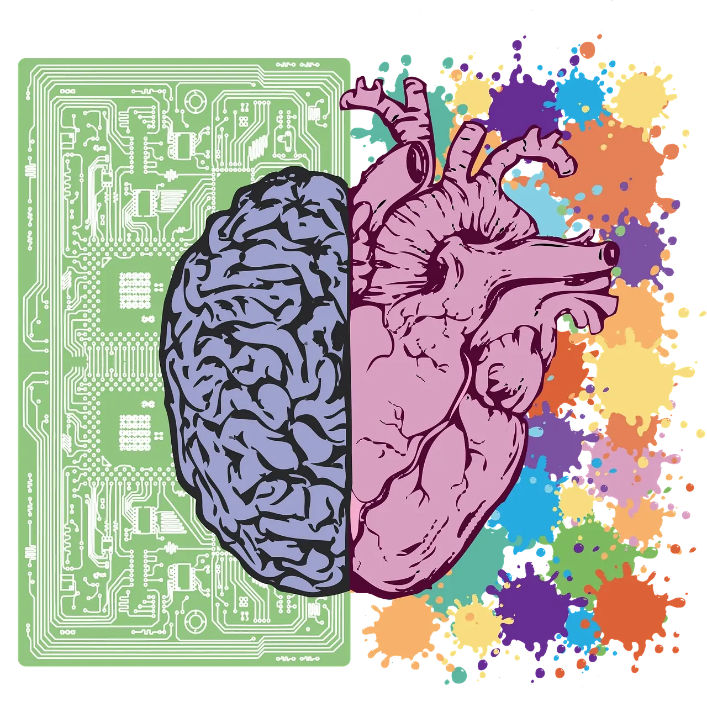
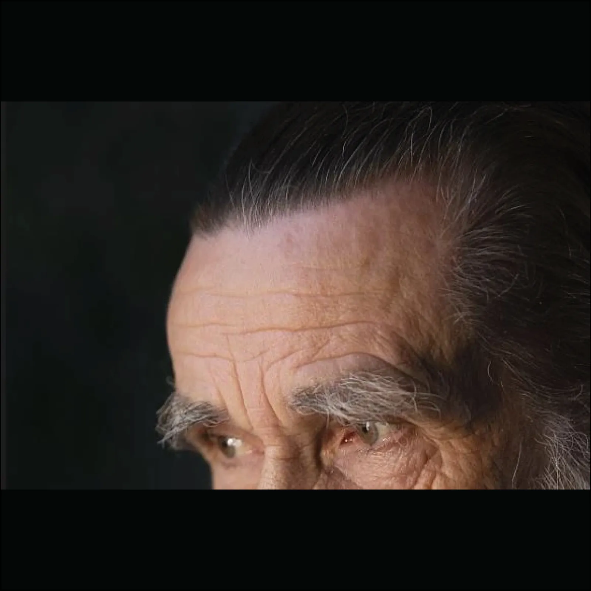
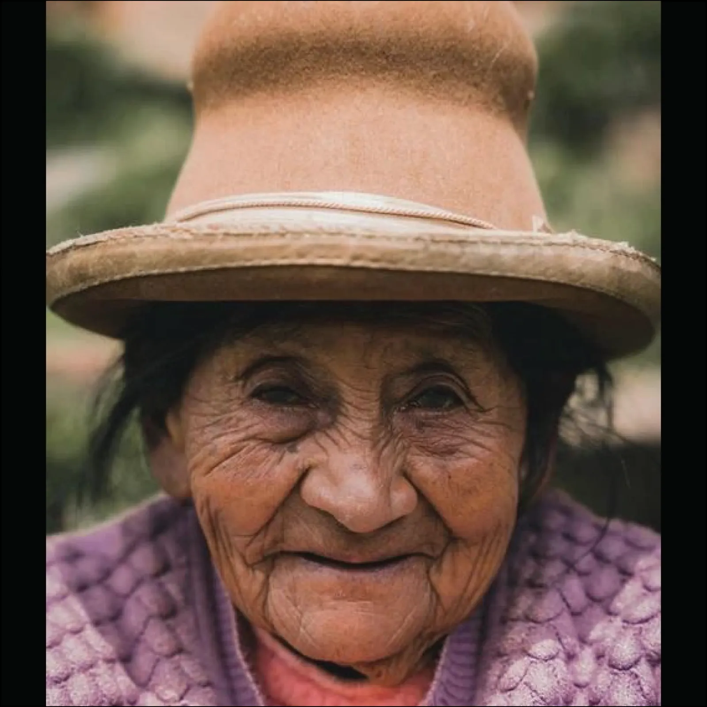
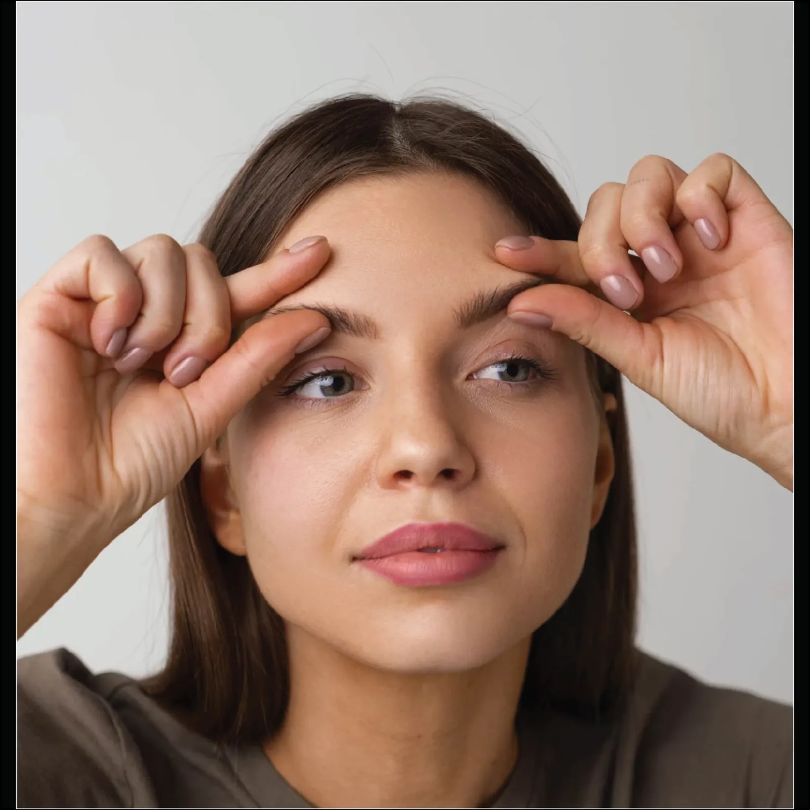
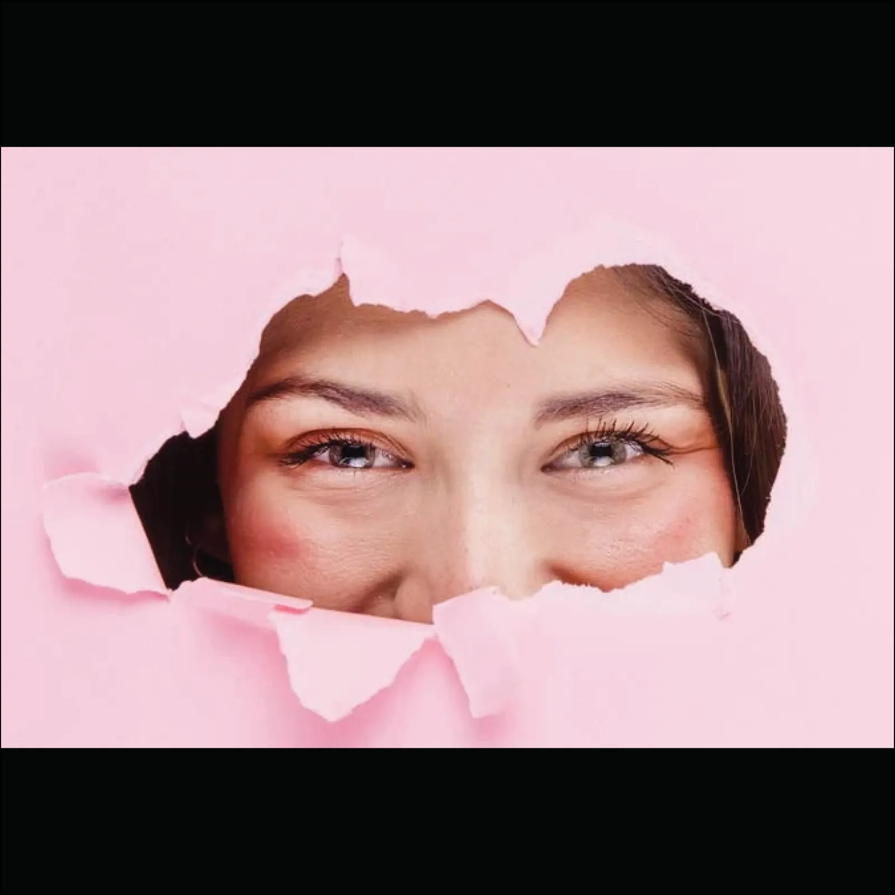
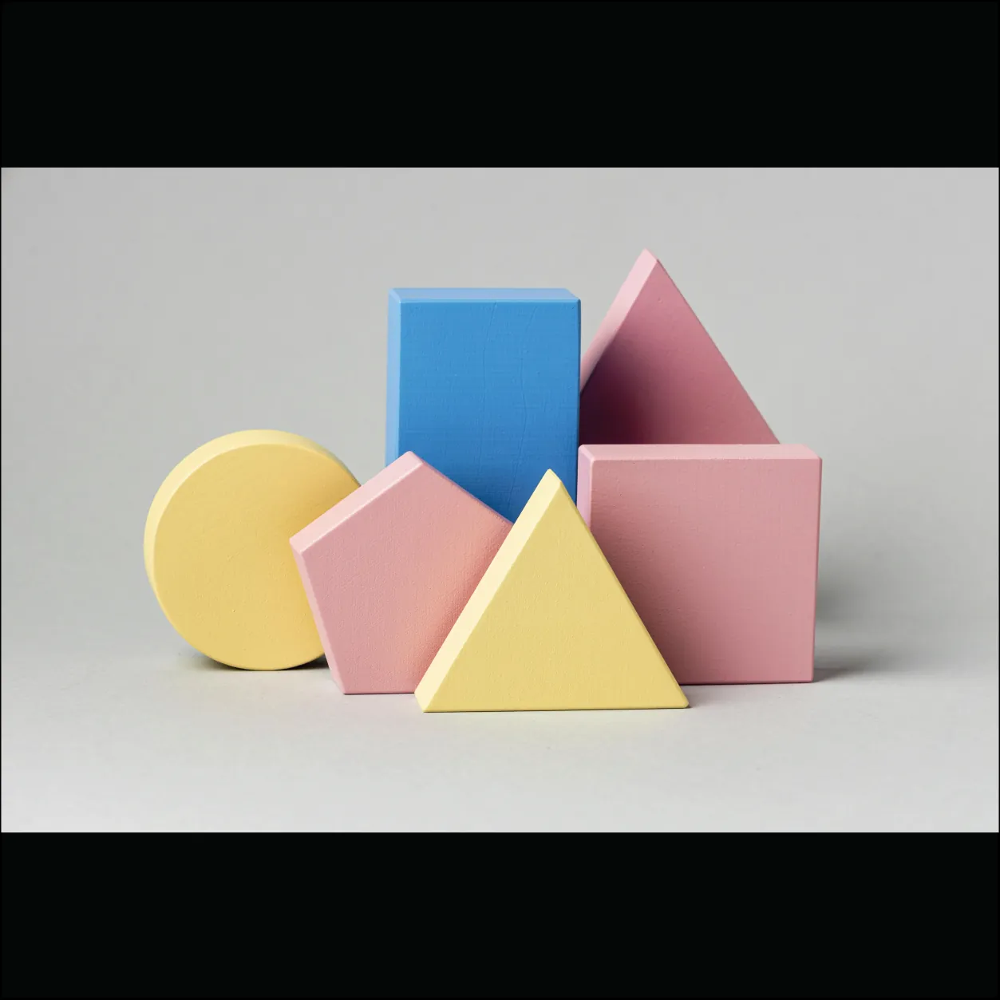
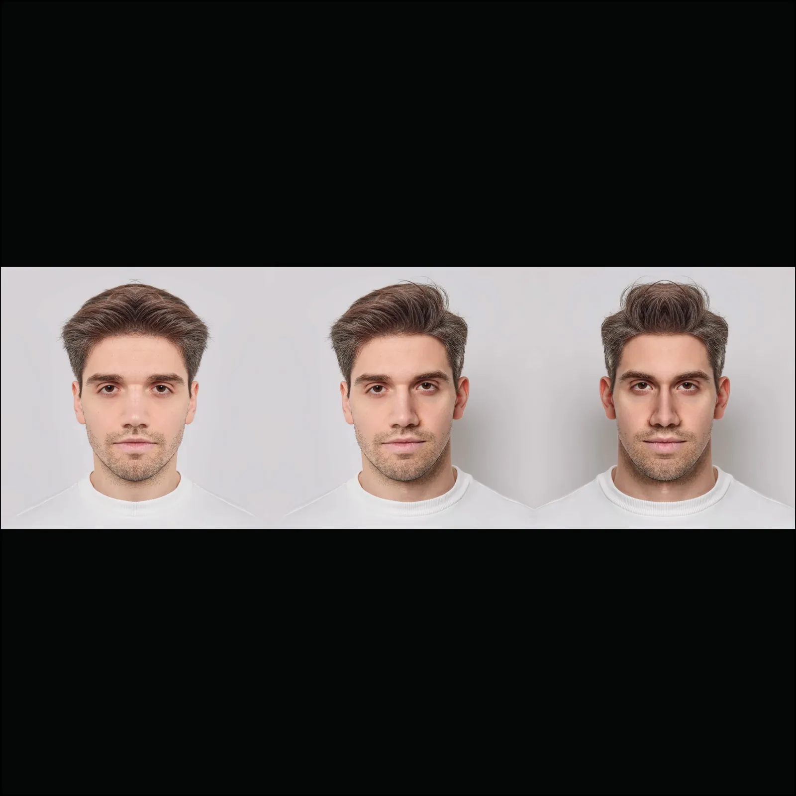

Блог —
Лицата говорят
Статии, наблюдения и прозрения от практиката по разчитане на лица (Face Reading) — какво показват чертите на лицето за характера, силните страни и поведението на човека.
Имаш качество да работиш самостоятелно и това се вижда в лицето ти?
Начин да разбереш хората, меките им умения и качества на личността — и дали биха били подходящи за изискванията на дадена длъжност.
Прочети →Лицето на екипа – как да разчетем динамиката на екипа през лицата
Само знанията и компетенциите на лидера ли имат значение, за да бъде един екип по-дълготраен и успешен? Мисля, че всички знаем отговора - а и Лицето го показва също!
Прочети →Разчитане на лица — нов слой към процеса на подбор на кандидати
Не става въпрос за етикиране. Става въпрос за виждане на човека до нас. И всеки, когато е "видян" и е на правилното за него място, личната му удовлетвореност расте.
Прочети →
Познанията за лицата и ролята им в бизнеса
Да умееш да видиш онези качества, които няма да ги видиш написани в CV-то на човек. Умеете ли да виждате хората в екипа си такива каквито са?
Прочети →Лицето показва основни насоки на действие — Къде?
История от ежедневието: как само по две-три черти в лицето ще можете да разберете как действа даден човек на работното си място.
Прочети →Кратък прочит на някои черти от лицето на Брад Пит
Какво казват: челюстта, формата на лицето и една бръчка, която говори много. Познайте Брад Пит само по тези 3 черти.
Прочети →Вертикални линии между веждите
За какво говорят вертикалните бръчки между веждите — какво казва лицето ти.
Прочети →Топография в нашето лице?!
Китайската физиогномика и един от начините да обясним ин/ян баланс в лицата.
Прочети →
Умеете ли да си давате почивка — веждите могат да покажат това
Веждите са един от най-красноречивите елементи на лицето — научете какво разкриват за вашата връзка с почивката и възстановяването.
Прочети →Защо в живота на някои хора всичко е "черно" или "бяло"
Кои са чертите в лицето, които могат да подскажат за подобен мироглед.
Прочети →Плътни устни
Устата ни е едно от най-чувствените ни места в нашето лице и устните са много сензитивни, съдържайки множество нервни окончания.
Прочети →
Face Reading за нашите бръчки
Заличавайки дадена бръчка, дали заличаваме и това, което е вече част от нас?!
Прочети →
Какво показват високо разположените вежди
По космите на веждите, по дължината им, по разположението им, формата им може да се тълкува много за човека.
Прочети →
Нашата мини "автобиография" е закодирана в чертите ни
Как мислим всъщност, как чувстваме и как действаме? Запитвали ли сте се?
Прочети →
Формите създават поведение
Формата ни дава рамка – как се чувстваме във физическият свят
Прочети →
Какво представляват огледалните снимки и техният анализ
Има ли баланс между двете ни части? Какво означават различията?
Прочети →